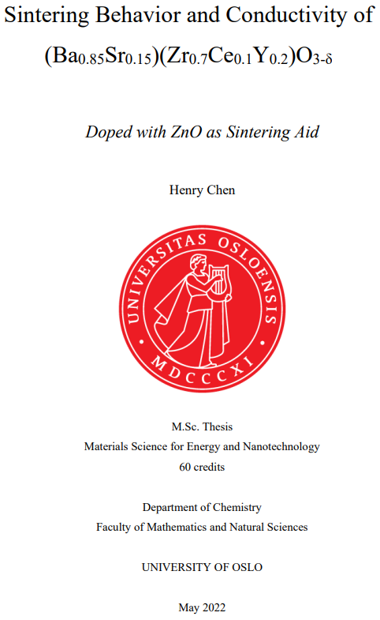
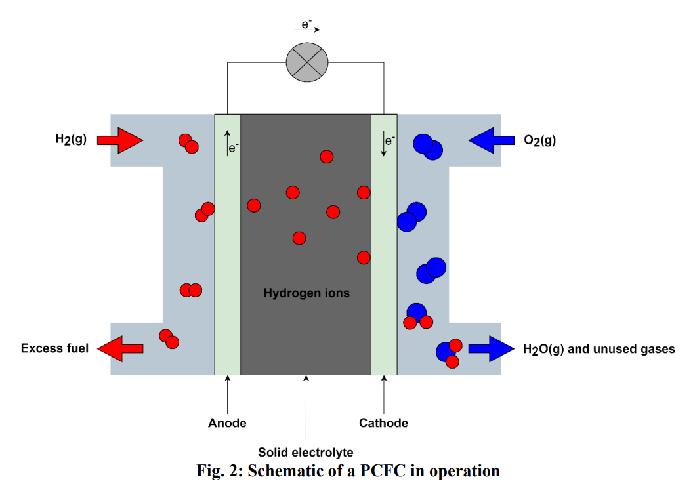
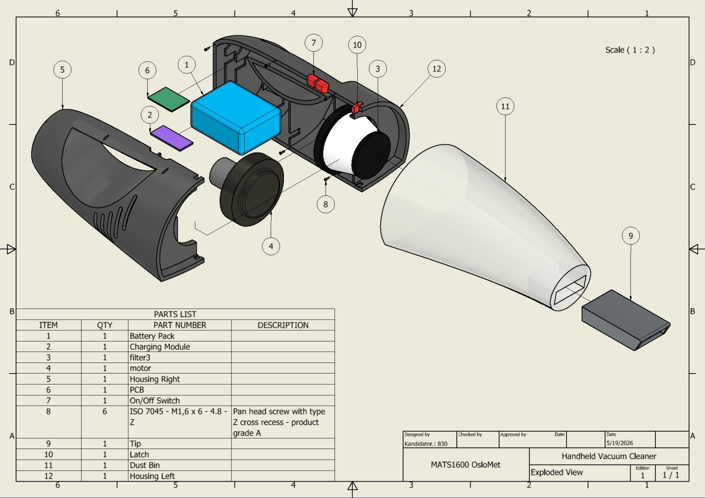
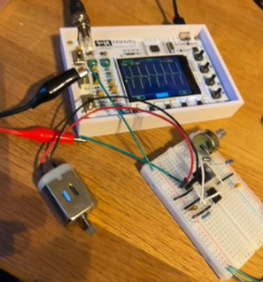

Hei, jeg heter Henry 👋
Fra atomer til automasjon. Fortsatt under konstruksjon.
Jeg er en ingeniørspire med bakgrunn i materialvitenskap og erfaring
fra forskning og utvikling. Nå studerer jeg maskiningeniørfag og
sikter meg inn mot mekatronikk.
Litt om meg
Jeg heter Henry Chen, er 28 år og kommer fra Bærum. Jeg har en
mastergrad i materialvitenskap for energi- og nanoteknologi fra
Universitetet i Oslo, og tre års arbeidserfaring, hovedsakelig
innen forskning og utvikling (R&D). Nå tar jeg en bachelorgrad
i maskiningeniørfag ved OsloMet, med planer om å spesialisere meg
i mekatronikk.
Ferdigheter
Metoder og verktøy jeg har arbeidet med innen materialvitenskap,
beregning, design og produksjon.
Materialvitenskap
Elektrokjemi
- EIS – elektrokjemisk impedansspektroskopi
- EMF – elektromotorisk spenning
- CV – syklisk voltammetri
Materialkarakterisering
- SEM – skanningelektronmikroskopi
- XRD – røntgendiffraksjon
- Termogravimetri
- Dilatometri
Uorganisk syntese
- APCVD – kjemisk dampavsetning ved atmosfærisk trykk
- SSRS – reaktiv sintring i fast fase
Beregning og data
CFD (strømningssimulering)
- SimScale
- OpenFOAM
- FreeCAD
Databehandling og utforskende dataanalyse
Design og produksjon
CAD (datamaskinassistert konstruksjon)
Prosjekter
Et utvalg av det jeg har jobbet med.
Masteroppgave – Elektrokjemigruppen UiO
I masteroppgaven jobbet jeg med protonkeramiske brenselceller
ved Elektrokjemigruppen på Universitetet i Oslo.
Materialvitenskap
Protonkeramiske brenselceller
Elektrokjemi
Les masteroppgaven →


Vil du se mer av arbeidet? Åpne forskningsplakaten i full størrelse:
Se forskningsplakaten →
Kranprosjekt
Oppgaven var å bygge en kran som kunne løfte en last på 5 kg
minst 2 cm ved hjelp av en inngangskraft på 6 N. Konstruksjonen
måtte holde seg innenfor 40 × 40 × 50 cm, samtidig som totalvekten
skulle være så lav som mulig.
Konstruksjon
Mekanikk
Problemløsning
Støvsugerprosjekt
Utarbeidet et produksjonsklart designunderlag for en støvsuger.
Brukte prinsipper for produksjonsvennlig design (DFM) for å gjøre
produksjon og modulær montering enklere. Valgte motor og
standardkomponenter ut fra krav til sugeevne, luftstrøm og kostnad.
Vurderte mulige feilmoduser med DFMEA og tok hensyn til relevante
prinsipper for kvalitetsstyring i ISO 9001.
Produktdesign
DFM
DFMEA


Ta kontakt
Har du et spørsmål, en idé eller lyst til å slå av en prat?
Send meg gjerne en e-post.
Send e-post